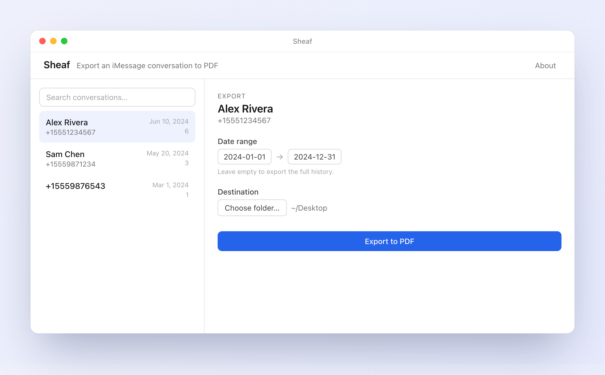

Sheaf exports any iMessage conversation — bubbles, photos, and dates — into a clean PDF. Everything happens on your Mac. Nothing is uploaded, ever.
Universal (Intel & Apple Silicon) · macOS 11+ · Signed & notarized by Apple · Open source

Messages has no way to save a conversation. Sheaf does it right — privately, faithfully, and once.
Sheaf runs entirely on your Mac. No account, no cloud, no telemetry. Your conversations never leave your computer — the only thing that goes anywhere is your checkout, handled by our reseller.
Real chat bubbles, photos, and timestamps — laid out like Messages, readable like a document. A proper PDF you can open, print, or keep forever, not a pile of screenshots.
Sheaf is GPL-3.0. The code that touches your most private data is out in the open — audit it yourself, or don't take our word for the privacy and read it. Nothing hidden.
$29, one time. No renewals, no upsells, no “pro tier.” If it isn't for you, there's a no-questions refund within 14 days.
macOS keeps Messages private. On first run, Sheaf walks you through switching on Full Disk Access — a one-time toggle in System Settings. It reads your database locally; nothing is sent anywhere.
Choose any one-on-one conversation and, if you like, a date range. Leave the dates empty to export the whole history.
Sheaf builds the PDF right on your Mac and drops it wherever you choose. Open it, print it, email it, keep it.
A conversation you can't bear to lose. A record for your lawyer, with every timestamp intact. Years of history, safe before you trade in the phone.
Secure checkout by Paddle, our reseller. Instant download.